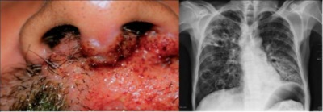
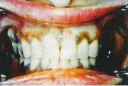

Paciente de 45 anos, gênero feminino, admitida em enfermaria de clínica médica do Hospital de Base para investigar significativa perda ponderal nos últimos 6 meses. Reporta repetidas internações em outros serviços, neste período, por episódios de dor abdominal associado a náuseas e vômitos. Segundo a mesma, sempre lhe era relatado que se encontrava desidratada e recebia alta após reposição volêmica com solução siológica a 0,9%. Há 30 dias, em uma destas internações, foram colhidos exames com o achado de TSH=9,0 mU/L (VR: 0,3 a 4,0). Foi-lhe prescrito levotiroxina 50mcg/dia e desde então episódios de dor abdominal tornaram-se mais frequentes associado à intensi cação da perda ponderal e astenia. Ao exame físico em sua admissão no Hospital de Base apresentava-se em regular estado geral, desidratada 3+/4+, FC=105bpm, FR=22ipm, PA=100x50mmHg, afebril, peso=50kg, altura=170cm. Ausculta pulmonar e precordial sem alterações. Exames admissionais: Ht=45%, leucometria=9.500 (eosinó los=10%) plaquetas=350mil, sódio=130mEq/L, potássio=4,8mEq/l, creatinina=0,8mg/dl, glicemia=92mg/dL e urina I sem alterações. Diante deste quadro clínico, assinale e alternativa que mostra o exame que provavelmente confirmaria o diagnóstico da paciente:
Na diferenciação da insuficiência adrenal primária da secundária, é correto afirmar que:
Com relação à Insuficiência Adrenal, podemos afirmar que:
São manifestações clínico-laboratoriais da doença de Addison, EXCETO:
Mulher, 39 anos, portadora de artrite reumatoide e usuária crônica de 20mg de prednisona. Evolui com úlcera perfurada duodenal e peritonite. Na tentativa de evitar uma insu ciência adrenal aguda, o anestesista faz hidrocortisona endovenosa na indução. Quais sinais clínicos levantariam a suspeita dessa complicação?
Mulher, 30 anos, asmática, em uso de corticoide com beta-agonista inalatórios e prednisona 20 mg/d há 3 meses. Interna para a realização de mamoplastia eletiva. No pós-operatório imediato evolui com dor abdominal intensa, náuseas, vômitos e febre baixa. Ao exame: PA = 90 x 60 mmHg; FC = 120 bpm; desidratada; glicemia capilar - Dx 48 mg/dL; abdome doloroso difusamente à palpação, descompressão brusca negativa. Assinale a alternativa correta:
Em relação ao manejo terapêutico de crise adrenal, além de ressuscitação volêmica com solução salina 0,9%, deve ser administrada:
Em relação à insuficiência adrenal, assinale a assertiva correta.
Um paciente de 50 anos de idade vai ao médico queixando-se de fadiga e perda de peso de 5 kg nos últimos 30 dias. Foi tabagista por 30 anos, é sedentário e tem obesidade centrípeta. Os respectivos níveis pressóricos evidenciam 80 mmHg x 50 mmHg; além disso, o paciente apresenta FC = 80 bpm, ECG normal, hiperpigmentação cutânea e mucosas coradas e hidratadas. Há presença de baqueteamento digital em mãos e pés. Sem edema de membros inferiores ou palpebrais. Resultado dos exames laboratoriais: NA = 110 mEq\L (VR = 135 mEq\L a 145 mEq\L), K = 6,7 mEq\L (VR = 3,5 mEq\L a 4,5 mEq\L), ureia e creatinina normais e gasometria arterial com nível de bicarbonato reduzido (acidose metabólica). Os raios X de tórax apresentam nódulo pulmonar espiculado de 3 cm e US de abdome: múltiplos nódulos hepáticos com lesão vegetante em suprarrenais bilaterais. Com relação a esse caso clínico, assinale a alternativa que indica o provável diagnóstico dessa paciente.
Assinale a alternativa CORRETA a respeito da insuficiência suprarrenal.
No caso de recém-nascido, 14 dias de vida, admitido na Emergência Pediátrica com quadro clínico de perda progressiva de peso, desidratação grave, vômitos e hipotensão, a principal hipótese diagnóstica é:
Sobre os distúrbios do córtex adrenal, assinale o item INCORRETO:
Paciente feminina, 45 anos, com diagnóstico de Diabetes Mellitus tipo 1 aos 5 anos de idade e Hipotireoidismo 1° aos 19 anos em tratamento adequado (sic), da entrada na emergência do nosso hospital com relato de perda de peso, adinamia, prostração e náuseas. Chamava atenção as doses baixíssimas de insulina que a paciente usava. Relatava que as doses foram sendo reduzidas gradativamente devido a hipoglicemias constantes. Ao exame físico apresentava PA: 90x50 mmHg, FC: 75 bpm, Eupneica em ar ambiente, ausculta pulmonar e cardíaca normais, abdome levemente doloroso a palpação difusamente. Exames laboratoriais com Creatinina: 0,8 mg/dl, ureia 35 mg/dl, Na 134 mEq/L, K: 4,9 mEq/L, Hemoglobina 11,2g/dl, sem outras alterações. A condição que tem que ser prontamente afastada diante deste quadro é? Qual exame seria adequado para isso?
Homem de 33 anos apresentando vômitos há 24 horas. Está incapaz de se alimentar e está sentindo fraco e muito letárgico. Faz uso de hidrocortisona 20mg 1x ao dia para tratamento de doença de Addison. T:38.1C FC:100bpm PA:105/70mmHg. Qual a conduta mais adequada?
No choque persistente com instabilidade hemodinâmica onde se suspeita de insuficiência adrenal, usa-se empiricamente:
A cliente de 31 anos refere perda acentuada do apetite acompanhada da incapacidade de digerir os alimentos e perda de peso. Relata náuseas, vômitos, dor abdominal e diarreia. Ao exame físico há presença de distensão abdominal e distúrbio hidroeletrolítico. O diagnóstico mais provável neste caso, é respectivamente:
Paciente com diagnóstico de Doença de Addison há 2 anos, em uso de prednisona 5 mg 1 cp de manhã e 1 cp de tarde, refere episódios frequentes de tonturas e mal-estar e ganho de peso de 6 Kg nos últimos meses. No exame físico apresenta adiposidade central com circunferência abdominal de 104 cm, mas apresenta hipotensão postural com queda de 20 mm Hg na Pressão arterial sistólica ao car de pé. Exames laboratoriais:Cortisol: 1,6mg/dl (VR 5-26), Sódio: 136 mEq/L (135 a 145), Potássio: 5,2 mEq/L (3,5 a 5). Qual seria a proposta de tratamento?
São características clínicas que podem ser encontradas na insuficiência da suprarrenal:
Mulher, 27 anos, refere anorexia, prostração e emagrecimento de 8kg em 1 ano. Há 8 meses apresenta náuseas, vômitos, tonturas posturais e dor abdominal. Amenorreica há 6 meses. Ao exame, está emagrecida e com nítida hipotensão postural. Há hiperpigmentação generalizada e redução de pelos axilares e pubianos. Que conjunto de manifestações laboratoriais espera-se encontrar nesta paciente?
As glândulas adrenais foram primeiramente descritas pelo anatomista italiano Bartolomeo Eustachi em 1563. Thomas Addison descreveu as características clínicas da insu ciência adrenal primária em 1855, somente quase um século mais tarde os hormônios adrenais foram totalmente isolados e caracterizados. Sobre a Insu ciência Adrenal, marque a opção CORRETA.
A falência aguda das suprarrenais, classicamente conhecida como síndrome de Waterhouse-Friderichsen, é observada na
Adolescente, 16 anos, sexo feminino, com diagnóstico de Lúpus Eritematoso Sistêmico (LES), em uso crônico de prednisona de 40 mg/dia, hidroxicloroquina de 400 mg/dia e ciclofosfamida mensal devido a acometimento de sistema nervoso central (vasculite). Há três dias, após brigar com o namorado, parou de alimentar-se e de usar medicações. Vem trazida ao pronto-socorro por familiares, pois está sonolenta e confusa há 3 horas. Mãe não sabe referir sobre febre, tosse ou alterações urinárias. Ao exame físico, regular estado geral, descorada, hidratada, PA = 60 x 40 mmHg, murmúrio vesicular presente, sem ruídos adventícios, ritmo cardíaco regular, frequência cardíaca de 110 bpm, abdome sem alterações, sonolenta, confusa. A provável causa do rebaixamento de nível de consciência da paciente e a conduta são, respectivamente:
Mulher de 64 anos procura o consultório médico por queixa de perda de peso recente, de 8 kg em 30 dias, prostração, náuseas e vômitos. Apresenta PA de 80x60 mmHg, frequência cardíaca de 120 bpm. Nos exames admissionais, Na = 125 mg/dL, K = 6,3 mg/dL, creatinina = 0,7 mg/dL. Qual é o tratamento para a paciente em questão?
Sobre Insuficiência Adrenal (IA) é correto afirmar que: I. a IA aguda é uma emergência clínica cujo tratamento consiste em corrigir distúrbios hidroeletrolíticos, realizar expansão volêmica e fazer a reposição endovenosa de glicocorticoide. II. a suspensão abrupta de prednisona após uso prolongado e doses elevadas é causa de IA devido ao aumento na produção de ACTH pela hipófise. III. indivíduos com IA crônica têm risco aumentado para Crise Adrenal Aguda quando expostos a infecções graves e cirurgias de grande porte. IV. Hiponatremia e Hipocalemia associadas a Cortisol basal abaixo de 3 ug/dL são sugestivos de IA.
Mulher, 32 anos, relata história de oito meses de fraqueza progressiva e astenia além de uma semana de febre, náuseas e vômitos. Deu entrada no PS com queda do estado geral, febril, emagrecida e com hiperpigmentação de pele e mucosas. PA: 100/60 mmHg, P: 98 bpm (supina), PA: 80/40 mmHg, PA: 110 bpm (ortostática), IMC: 17 Kg/m2, Laboratório: Hemograma com leucocitose, Glicemia: 55 mg/dl, Na: 117 mEq/l, K: 7,2 mEq/l, Uréia: 106 mg/dl, Creatinina: 2,9 mg/dl, Cálcio iônico: 5,5 mmol/l, pH: 7,2, base excesso (BE): - 6,3. Com relação a este caso, pode-se afirmar que:
Que dado semiótico pode auxiliar na diferenciação de insuficiência adrenal primária da secundária?
Homem, 57 anos, negro, há 7 meses refere mal-estar, cansaço fácil, fadiga, náuseas, diminuição do apetite e emagrecimento de 5 kg no período. Está em tratamento regular para hipertensão arterial sistêmica com betabloqueador e inibidor de enzima conversora de angiotensina. É diabético em uso de insulina há 6 anos. Procurou o pronto-socorro por duas vezes, pois sua pressão estava muito baixa e desmaiou, sendo orientado a suspender o inibidor de enzima conversora de angiotensina. Exame físico: PA sentado = 90 x 62 mmHg; PA em pé = 70 x 58 mmHg; FC = 74 bpm; oximetria de pulso = 96% (em ar ambiente); corado; hidratado. Pulmões: murmúrio vesicular presente sem ruídos adventícios. Coração: bulhas rítmicas normofonéticas sem sopros. Membros inferiores: ausência de edema. Exames laboratoriais: Na sérico = 121 mEq/L; K sérico = 5,4 mEq/L; glicemia = 67 mg/dl; creatinina sérica = 1,2 mg/dl e ureia sérica = 42 mg/dl. O diagnóstico é:
Um menino de seis anos de idade tem diagnóstico de abscesso periamigdaliano rmado há cinco dias, quando iniciou o uso de clavulanato de amoxicilina, sendo submetido à drenagem cirúrgica do abscesso periamigdaliano há 72 horas. Desde esse dia, houve regressão da febre e melhora da aceitação da alimentação até 24 horas atrás, quando surgiram astenia intensa e hipotensão postural. O exame físico mostra: PA = 80 x 50 mmHg; FC = 128 bpm; FR = 28 irpm; sem tiragem; SatO2 = 98% e acentuada adinamia. Na anamnese são relatados episódios recorrentes de taquidispneia e sibilância, tendo sido diagnosticada asma desde os três anos de idade, e o último episódio de crise ocorreu há 45 dias, exigindo hospitalização por cinco dias, durante os quais foi medicado com metilprednisolona IV e salbutamol inalatório. Recebeu alta hospitalar com prescrição de prednisolona oral e salbutamol inalatório por mais cinco dias. A mãe do paciente refere que, por conta própria, manteve o uso de prednisolona por via oral até o início do quadro atual. O nível plasmático de cortisol, após a administração intravenosa de 0,5 mcg de ACTH, foi de 8 mcg/dl. Nesse caso, o tratamento medicamentoso imediato deve ser:
Paciente masculino de 56 anos chega ao pronto atendimento com queixa de fadiga, astenia, tontura ao levantar e perda ponderal não aferida com duração de algumas semanas. No exame físico, encontra-se corado, desidratado, eupneico, frequência cardíaca: 108 bpm, pressão arterial deitado: 110 x 70 mmHg e sentado: 90 x 60 mmHg, auscultas cardíaca e pulmonar dentro da normalidade. Exames laboratoriais mostram; sódio sérico: 132 mEq/L, potássio sérico: 5,9 mEq/L, creatinina: 1,8 mg/dl, ureia 96 mg/dl, hemograma dentro da normalidade. Quanto ao caso, assinale a alternativa CORRETA.
Sobre a insuficiência adrenal assinale e afirmativa errada:
Mulher de 40 anos comparece para avaliação de perda de peso há 1 ano. Ela refere também astenia importante, anorexia, náuseas e vômitos. Ela fez tratamento para tuberculose há 03 anos. Durante o exame físico, você observa hiperpigmentação de joelhos, cotovelos, mamilos e pregas palmares. Há também rarefação de pelos axilares e pubianos. A pressão arterial é 90 x 60 mmHg. Exames laboratoriais mostram eosino lia, sódio sérico de 128 mEq/L e potássio 6,0 mEq/L. A dosagem de qual hormônio é mais importante nesse caso?
Paciente de 21 anos, sexo feminino, foi admitida em serviço de clínica médica com astenia, anorexia, emagrecimento de cerca de 5 kg, hipotensão, dores abdominais e hiperpigmentação, com 2 meses de evolução. Nos antecedentes pessoais não havia história de tuberculose, trauma ou cirurgia. Negava hábitos alcoólicos, drogas ou qualquer outra medicação. Os antecedentes familiares eram irrelevantes. Na admissão, a doente apresentava-se deprimida e emagrecida com hiperpigmentação na face, linhas interdigitais da palma das mãos e nos lábios. A pressão arterial era de 80 x 44 mmHg, o pulso era de 110 bpm e não tinha febre. A ausculta cardíaca e pulmonar eram normais. A palpação abdominal era normal, o baço e o fígado não eram palpáveis. Os exames laboratoriais revelaram: hemoglobina = 12,8 g/dl; leucócitos = 7,4 x 10/L com 42% de linfócitos e 49% de neutró los; 5% de eosinó los; 4% de monócitos e 0% de basó los; plaquetas = 264 x 10/L. Velocidade de sedimentação na 1º hora: 11 mm (Westergreen). Proteína C-reativa: negativa; sódio = 135 mmol/L; potássio 6,8 mmol/L; cálcio = 10.1 mg/dl; magnésio = 1,81 mg/dl; fósforo = 6,66 mg/dl; glicose = 80 mg/dl, ureia = 22.1 mg/dl; creatinina = 0.68 mg/dl; AST = 60 U/L; ALT = 47 U/L; bilirrubina total = 0.7 mg/dl. O estudo da coagulação do sangue era normal. ACTH = 2302.0 pg/ml (normal = 7.0-51); cortisol (manhã e tarde) < 0.2 mg/dl (normal = 4.3-22.4); aldosterona: indetectável (normal = 10-160 pg/ml); renina = 969.0 pg/ml (normal = 3.6-20.1 pg/ml). Baseado na história clínica acima, qual o diagnóstico MAIS PROVÁVEL da paciente?
Analise as afirmativas abaixo. I. O hipotireoidismo primário é caracterizado por uma supressão dos níveis séricos de TSH. II. A hiperpigmentação da pele é um achado típico da insuficiência adrenal secundária. III. No acompanhamento clínico de um paciente com hipotireoidismo secundário, o nível sérico de TSH não tem valor para guiar a dose de hormônio tireoideo. IV. A hipersecreção do hormônio do crescimento pode elevar a glicemia até níveis compatíveis com diabetes mellitus. Assinale a alternativa CORRETA.
Uma mulher de 37 anos procura atendimento médico referindo perda progressiva de peso (± 8 kg) nos últimos 6 meses, astenia, fadiga, tosse seca e escurecimento progressivo da pele, associada a manchas hipocrômicas em tórax e membros. Exame físico: PA 90/60 mmHg, FC 90 bpm, FR 12 ipm, IMC 20,2 kg/m². Bócio difuso com cerca de 40 gramas. Vitiligo em braços e região superior do tórax e dorso. Hiperpigmentação das linhas das palmas das mãos e interdigitais, e de mucosas. Dosagens laboratoriais: TSH: 7,5 mU/L (0,4–4,5), T4 livre: 0,7 ng/dl (0,8–1,9), Anticorpos antimicrossomal positivo 1:6400. Cortisol: 2 mcg/dl. Em relação a esse quadro, assinale a alternativa INCORRETA.
Uma mulher com 28 anos tem insu ciência adrenal e bronzeado muito distinto, embora raramente saia de casa. Qual das seguintes é a etiologia mais provável?
Mulher, 32 anos, relata história de 05 meses de fraqueza progressiva e astenia, além de 01 semana de febre, náuseas e vômitos. Deu entrada no PS com queda do estado geral, febril, emagrecida e com hiperpigmentação da pele e mucosas. PA: 100/60 mmHg (supina), P: 98 bpm (supina), PA: 80/40 mmHg (ortostática), P: 110 bpm (ortostática), Índice de massa corpórea (IMC): 17 kg/m². Laboratorial: Hemograma com leucocitose, glicemia: 55 mg/dl, Na+: 117 mEq/L, K+: 7.2 mEq/L, ureia: 106 mg/dl, creatinina: 2,9 mg/dl, Cálcio iônico: 5.5 mg/dl, pH: 7,2, Base Excess (BE) - 6,3. Com relação a esse caso pode-se afirmar que:
A insuficiência adrenal costuma ser negligenciada e por isso é uma doença subdiagnosticada. Com relação a este assunto pode-se afirmar que:
Assinale a alternativa que apresenta uma manifestação da insuficiência adrenal aguda.
Medicamentos utilizados no tratamento da doenças reumáticas Paciente submetida à colecistectomia videolaparoscópica por colecistite, sem intercorrências, com uso por 24h no pré- operatório de antibióticos e sintomáticos, evoluiu após 24h com astenia, dor abdominal, hiporexia e síncope. Portadora de artrite reumatoide fazia uso de longa data de metotrexate 1 mg/semanal, prednisona 7,5 mg/dia, cálcio, vitamina D e ácido fólico. Sobre o quadro apresentado no pós-operatório é incorreto afirmar:
A inibição do eixo hipotálamo-hipófise suprarrenal secundária ao uso de corticosteroides:
Paciente, 24 anos, sexo feminino, admitida na enfermaria de clínica médica com queixas de astenia, anorexia, emagrecimento de 6 kg, hipotensão, dores abdominais e hiperpigmentação cutânea, com 2 meses de evolução. Não apresentava antecedentes de etilismo e tuberculose. Na admissão, apresentava hiperpigmentação na face, linhas interdigitais da palma das mãos e lábios. PA = 80 x 44 mmHg; FC = 110 bpm; afebril. Exames laboratoriais: Hb = 12 g/dl; leucócitos = 7.400 mm³; plaquetas = 26.800 mm³; VHS = 11; PCR = negativo; Na = 128 mmol/L; K = 6,8 mmol/L; ureia = 34 mg/dl; creatina = 1,9 mg/dl. Com relação ao caso clínico é correto afirmar, EXCETO:
Homem, 45 anos de idade, lavrador, dá entrada em unidade de emergência com quadro de náuseas, vômitos, dor abdominal e diarreia há 6 horas. Há 2 meses, tem perda de peso e astenia, odinofagia, tosse com expectoração, cansaço aos esforços, lesões orais e cutâneas. Ao exame físico, encontra-se em regular estado geral, desidratado +/4, descorado +/4, dispneico, febril, acianótico, anictérico. Orofaringe: hiperemia intensa. Pele: hiperpigmentação de dobras e úlcera que atingia amplamente a região supralabial e se estendia à mucosa nasal, destruindo parcialmente a columela. Adenomegalia em cadeias cervicais. Pulso = 96 bpm; PA decúbito = 90 x 60 mmHg; PA ortostase = 60 x 40 mmHg. Ausculta pulmonar: estertores nos em ambos os pulmões, abdome escavado, difusamente doloroso à palpação, sem dor à descompressão brusca. Exames subsidiários: glicemia: 75 mg/dl; creatinina: 1,1 mg/dl; ureia: 34 mg/dl; sódio: 130 mEq/L; potássio: 6,4 mEq/L; Hb: 10 g/dl; Ht: 28%; GB: 13.000; neutró los: 65%; linfócitos: 24%; eosinó los: 8%. Detalhes da região supralabial e aberturas das fossas nasais e radiografia de tórax: Para o quadro agudo, a conduta inicial que deve ser associada à hidratação endovenosa é:

A insuficiência adrenal secundária pode resultar nas seguintes alterações clínicas, exceto:
Mulher de 38 anos comparece para consulta com quadro de redução da libido, atro a mamária, ganho de peso, fala arrastada e astenia intensa. Exame físico: mamas atró cas, anasarca (+/4+) e redução da pili cação genital. Uma avaliação laboratorial mostra T4 livre baixo; TSH no limite inferior; cortisol basal = 05 mcg/dl após estimulação com ACTH (valor de referência > 18 mcg/dl); testosterona baixa e FSH e LH nos limites inferiores. Qual o exame mais provavelmente revelará a causa da sua doença?
Revisar: possível letra faltando em enunciado
Sobre a insuficiência adrenal aguda, podemos afirmar que:
Mulher, 30 anos, apresentando fraqueza , anorexia, náuseas, vômitos, perda ponderal, pigmentação da pele e hipotensão; com história de tratamento recente para tuberculose e infecção por citomegalovírus. Os achados laboratoriais mostram: anemia, ACTH normal, aldosterona baixa, hiponatremia e hiperpotassemia. A hipótese diagnóstica provável é:
Homem de 45 anos, apresentando dor epigástrica há 48h, acompanhada de náuseas e vômitos, astenia severa e fadiga, petéquias, hipotensão e hipotermia, chega à emergência chocado. Como não há tempo su ciente para confirmar a suspeita clínica, o tratamento do choque deverá ser iniciado de imediato. Os exames mais importantes para o diagnóstico foram eosinofilia importante, cortisol normal, hiponatremia, hipoglicemia e hipercalemia. O diagnóstico mais provável é:
Revisar: possível letra faltando em enunciado
Na síndrome poliglandular autoimune (APS),
Mulher de 38 anos, portadora de artrite reumatoide, vinha em uso crônico de prednisona, que foi suspensa há 3 semanas, quando começou a se queixar de cansaço. Há 2 dias, apresentou piora acentuada do estado geral, procurando o pronto- socorro. Considerando o manejo da sua corticoterapia, NÃO é esperado o seguinte achado no hemograma:
Uma mulher de 42 anos é trazida à sala de emergências médicas devido a um quadro clínico caracterizado por Hipotensão Arterial, pele fria e esturpor. Os exames acusam Glicemia: 60 mg/dl; Sódio sérico: 112 mEq/l e Potássio sérico: 6,0 mEq/l. Dado esse quadro, qual das causas abaixo NÃO é compatível com uma das causas da patologia que acomete essa paciente?
Num paciente chocado em que há suspeita de insu ciência aguda de suprarrenais, quais as alterações eletrolíticas frequentes que dão força à suspeição diagnóstica e orientam para o tratamento imediato com hidrocortisona?
As seguintes alterações laboratoriais são frequentes na insuficiência adrenal primária, EXCETO:
A Síndrome poliglandular auto-imune tipo 2 caracteriza-se por:
Entre as manifestações abaixo relacionadas, assinale a que é comum, tanto na insu ciência adrenal primária, quanto na secundária.
Assinale a alternativa que preenche correta e respectivamente as lacunas do caso clínico descrito a seguir. A imagem abaixo é de paciente de 16 anos, que iniciou com anorexia e dor abdominal nos últimos 3 meses, tendo perdido 10 kg nesse período. Ele veio à emergência com quadro atual de vômitos, dor abdominal e diarreia. A pressão arterial era de 80X50 mmHg deitado e de 50X30 mmHg na posição ortostática. Na avaliação diagnóstica, foram encontrados valores plasmáticos de cortisol ..........., ACTH ............, atividade da renina plasmática .......... e aldosterona reduzida.

A síndrome poliglandular autoimune tipo II (SPGA II): Respostas: 1 12 23 34 45 56